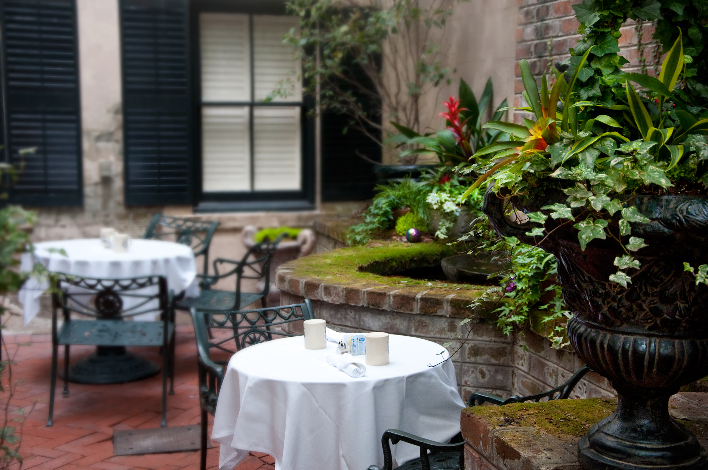

Cafe + Bar
Dhalia
APPETIZERS
APPETIZERS
A wonderful serenity has taken possession of my entire soul, like these sweet mornings of spring which I enjoy with my whole heart.
Lobster Bisque
Smoked Salmon Terrine
Tuna Ceviche
Wild Mushroom Flan
Almond Bruschetta
Green Chilli Canapee
Artichoke Rucula Salad
Main Course
Main Course
Drops of rain could be heard hitting the pane, which made him feel quite sad.
Wild Sea Bass Filet
Linguini and Clams
Shrimp and Crabmeat Alfredo
Broiled Stuffed Flounder
Mussels Marinara
Grilled Mooloolaba Giant king prawns
Lobster Mornay
Fresh Shrimp Tart
SPECIALS
SPECIALS
Far far away, behind the word mountains, far from the countries Vokalia and Consonantia, there live the blind texts.
Ratatouille
Le Tourin
Wild Salmon Bruschetta
Sweet Mustard Gratin
Homemade Pizza Mediteranica
Spanakopita Speciale
Ricotta Spinach Cannelloni
DESSERTS
DESSERTS
It is a paradisematic country, in which roasted parts of sentences fly into your mouth.
New England Apple Crisp
Southern Pecan Pie
Brownie Fudge Sundae
Strawberry Mousse Cake
Vanilla Crème brûlée
Lemon Sorbet
Crunchy Almond Cake
WINES
WINES
A small river named Duden flows by their place and supplies it with the necessary regelialia.
CARM Douro Reserva
Fontodi Colli della Toscana Centrale Flaccianello
Alban Syrah Edna Valley Alban Estate Reva
Zaca Mesa Syrah Santa Ynez Valley
Quinta do Vallado Douro Reserva
Viticcio Chianti Classico Riserva
Avignonesi Vino Nobile di Montepulciano
{kind=link}
{kind=link}
{kind=link}
{kind=link}
{kind=link}